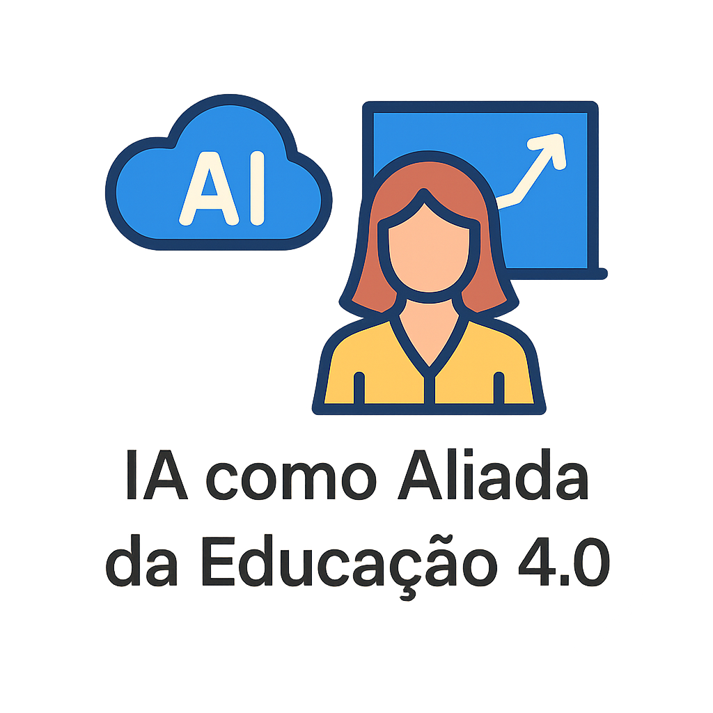
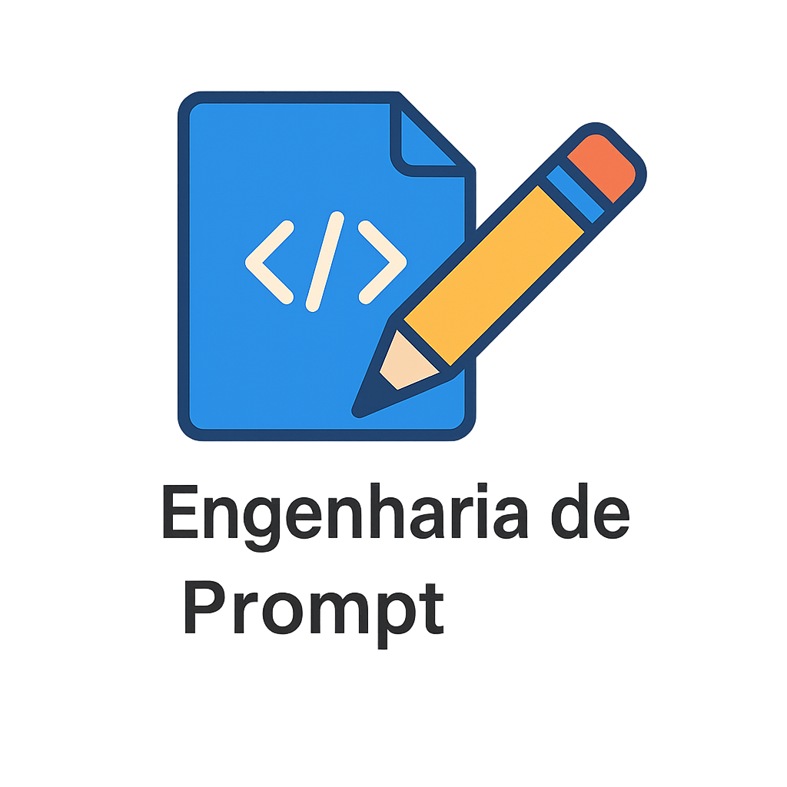

Esta seção reúne conteúdos introdutórios e práticos sobre o uso da Inteligência Artificial na educação. Aqui você encontrará orientações para começar a aplicar essas tecnologias de forma consciente, eficiente e alinhada à Educação 4.0.

IA como Aliada da Educacao 4.0
Explore fundamentos sobre o papel da inteligencia artificial na inovacao pedagogica e na transformacao digital da educacao.

Etica no Uso da Inteligencia Artificial
Conheca principios e cuidados para utilizar IA com responsabilidade, transparencia e intencao pedagogica.

Engenharia de Prompt
Aprenda a formular comandos mais claros e eficientes para obter respostas uteis no contexto educacional.

Exemplos Praticos
Veja aplicacoes concretas de IA para planejamento, mediacao pedagogica e apoio a aprendizagem.